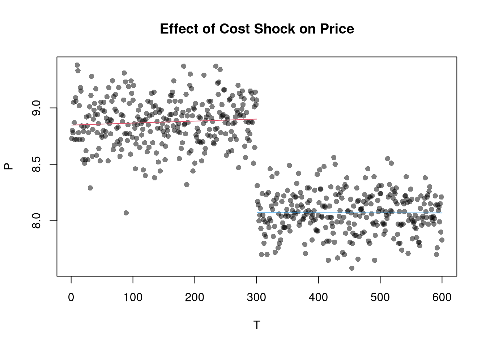

9 Endogeneity Issues
Just like many economic relationships are nonlinear, many economic variables are endogenous. By this we typically mean that \(X\) is an outcome determined (or caused: \(\to\)) by some other variable.
- If \(Y \to X\), then we have reverse causality
- If \(Y \to X\) and \(X \to Y\), then we have simultaneity
- If \(Z\to Y\) and either \(Z\to X\) or \(X \to Z\), then we have omitted a potentially important variable
These endogeneity issues imply \(X\) and \(\epsilon\) are correlated, which is a barrier to interpreting OLS estimates causally. (\(X\) and \(\epsilon\) may be correlated for other reasons too, such as when \(X\) is measured with error.)
## Simulate data with an endogeneity issue
n <- 300
z <- rbinom(n,1,.5)
xy <- sapply(z, function(zi){
y <- rnorm(1,zi,1)
x <- rnorm(1,zi*2,1)
c(x,y)
})
xy <- data.frame(x=xy[1,],y=xy[2,])
plot(y~x, data=xy, pch=16, col=grey(.5,.5))
abline(lm(y~x,data=xy))
With multiple linear regression, note that endogeneity biases are not just a problem your main variable. Suppose your interested in how \(x_{1}\) affects \(y\), conditional on \(x_{2}\). Letting \(X=[x_{1}, x_{2}]\), you estimate \[\begin{eqnarray} \hat{\beta}_{OLS} = [X'X]^{-1}X'y \end{eqnarray}\] You paid special attention in your research design to find a case where \(x_{1}\) is truly exogenous. Unfortunately, \(x_{2}\) is correlated with the error term. (How unfair, I know, especially after all that work). Nonetheless, \[\begin{eqnarray} \mathbb{E}[X'\epsilon] = \begin{bmatrix} 0 \\ \rho \end{bmatrix}\\ \mathbb{E}[ \hat{\beta}_{OLS} - \beta] = [X'X]^{-1} \begin{bmatrix} 0 \\ \rho \end{bmatrix} = \begin{bmatrix} \rho_{1} \\ \rho_{2} \end{bmatrix} \end{eqnarray}\] The magnitude of the bias for \(x_{1}\) thus depends on the correlations between \(x_{1}\) and \(x_{2}\) as well as \(x_{2}\) and \(\epsilon\).
Three statistical tools: 2SLS, RDD, and DID, are designed to address endogeneity issues. The elementary versions of these tools are linear regression. Because there are many textbooks and online notebooks that explain these methods at both high and low levels of technical detail, they are not covered extensively in this notebook.
9.1 Two Stage Least Squares (2SLS)
There are many approaches to 2SLS, but I will focus on the seminal example in economics. Suppose we ask “what is the effect of price on quantity?” You can simply run a regression of one variable on another, but you will need much luck to correctly intepret the resulting coefficient. The reason is simultaneity: price and quantity mutually cause one another in markets.4
9.1.1 Competitive Market Equilibrium
which has three structural relationships: (1) market supply is the sum of quantities supplied by individual firms at a given price, (2) market demand is the sum of quantities demanded by individual people at a given price, and (3) market supply equals market demand in equilibrium. Assuming market supply and demand are linear, we can write these three “structural equations” as \[\begin{eqnarray} Q_{S}(P) &=& A_{S} + B_{S} P + E_{S},\\ Q_{D}(P) &=& A_{D} - B_{D} P + E_{D},\\ Q_{D} &=& Q_{S} = Q. %% $Q_{D}(P) = \sum_{i} q_{D}_{i}(P)$, \end{eqnarray}\] This last equation implies a simultaneous “reduced form” relationship where both the price and the quantity are outcomes. With a linear parametric structure to these equations, we can use algebra to solve for the equilibrium price and quantity analytically as \[\begin{eqnarray} P^{*} &=& \frac{A_{D}-A_{S}}{B_{D}+B_{S}} + \frac{E_{D} - E_{S}}{B_{D}+B_{S}}, \\ Q^{*} &=& \frac{A_{S}B_{D}+ A_{D}B_{S}}{B_{D}+B_{S}} + \frac{E_{S}B_{D}+ E_{D}B_{S}}{B_{D}+B_{S}}. \end{eqnarray}\]
## Demand Curve Simulator
qd_fun <- function(p, Ad=8, Bd=-.8, Ed_sigma=.25){
Qd <- Ad + Bd*p + rnorm(1,0,Ed_sigma)
return(Qd)
}
## Supply Curve Simulator
qs_fun <- function(p, As=-8, Bs=1, Es_sigma=.25){
Qs <- As + Bs*p + rnorm(1,0,Es_sigma)
return(Qs)
}
## Quantity Supplied and Demanded at 3 Prices
cbind(P=8:10, D=qd_fun(8:10), S=qs_fun(8:10))## P D S
## [1,] 8 1.55025295 0.4470546
## [2,] 9 0.75025295 1.4470546
## [3,] 10 -0.04974705 2.4470546## Market Equilibrium Finder
eq_fun <- function(demand, supply, P){
## Compute EQ (what we observe)
eq_id <- which.min( abs(demand-supply) )
eq <- c(P=P[eq_id], Q=demand[eq_id])
return(eq)
}## Simulations Parameters
N <- 300 ## Number of Market Interactions
P <- seq(5,10,by=.01) ## Price Range to Consider
## Generate Data from Competitive Market
## Plot Underlying Process
plot.new()
plot.window(xlim=c(0,2), ylim=range(P))
EQ1 <- sapply(1:N, function(n){
## Market Data Generating Process
demand <- qd_fun(P)
supply <- qs_fun(P)
eq <- eq_fun(demand, supply, P)
## Plot Theoretical Supply and Demand
lines(demand, P, col=grey(0,.01))
lines(supply, P, col=grey(0,.01))
points(eq[2], eq[1], col=grey(0,.05), pch=16)
## Save Data
return(eq)
})
axis(1)
axis(2)
mtext('Quantity',1, line=2)
mtext('Price',2, line=2)
Now regress quantity (“Y”) on price (“X”): \(\beta_{OLS} = \frac{Cov(Q^{*}, P^{*})}{ Var(P^{*})}\). You get a number back, but it is hard to interpret meaningfully.
## Analyze Market Data
dat1 <- data.frame(t(EQ1), cost='1')
reg1 <- lm(Q~P, data=dat1)
summary(reg1)##
## Call:
## lm(formula = Q ~ P, data = dat1)
##
## Residuals:
## Min 1Q Median 3Q Max
## -0.47807 -0.11037 0.00182 0.10753 0.47874
##
## Coefficients:
## Estimate Std. Error t value Pr(>|t|)
## (Intercept) 0.19412 0.45317 0.428 0.669
## P 0.07762 0.05096 1.523 0.129
##
## Residual standard error: 0.1736 on 298 degrees of freedom
## Multiple R-squared: 0.007727, Adjusted R-squared: 0.004397
## F-statistic: 2.32 on 1 and 298 DF, p-value: 0.1287This simple derivation has a profound insight: price-quantity data does not generally tell you how price affects quantity (or vice-versa). Moreover, it also clarifies that our initial question “what is the effect of price on quantity?” is misguided. We could more sensibly ask “what is the effect of price on quantity supplied?” or “what is the effect of price on quantity demanded?”
If you have exogeneous variation on one side of the market, “shocks”, you can get information on the other. For example, lower costs shift out supply (more is produced at given price), allowing you to trace out part of a demand curve. Experimental manipulation of \(A_{S}\) leads to \[\begin{eqnarray} \label{eqn:comp_market_statics} \frac{d P^{*}}{d A_{S}} = \frac{-1}{B_{D}+B_{S}}, \\ \frac{d Q^{*}}{d A_{S}} = \frac{B_{D}}{B_{D}+B_{S}}. \end{eqnarray}\] So, absent any other changes, we could recover \(-B_{D}=d Q^{*}/d P^{*}\). In this case, the supply shock has identified the demand slope.5
## New Observations After Cost Change
EQ2 <- sapply(1:N, function(n){
demand <- qd_fun(P)
supply2 <- qs_fun(P, As=-6.5) ## More Supplied at Given Price
eq <- eq_fun(demand, supply2, P)
return(eq)
## lines(supply2, P, col=rgb(0,0,1,.01))
#points(eq[2], eq[1], col=rgb(0,0,1,.05), pch=16)
})
dat2 <- data.frame(t(EQ2), cost='2')
## Plot Market Data
dat2 <- rbind(dat1, dat2)
cols <- ifelse(as.numeric(dat2$cost)==2, rgb(0,0,1,.2), rgb(0,0,0,.2))
plot.new()
plot.window(xlim=c(0,2), ylim=range(P))
points(dat2$Q, dat2$P, col=cols, pch=16)
axis(1)
axis(2)
mtext('Quantity',1, line=2)
mtext('Price',2, line=2)
We are not quite done yet. We have pooled two datasets that are seperately problematic, and the noisiness of the process within each group affects our OLS estimate: \(Cov(Q^{*}, P^{*}) / Var(P^{*})\).
##
## Call:
## lm(formula = Q ~ P, data = dat2)
##
## Residuals:
## Min 1Q Median 3Q Max
## -0.85249 -0.15889 0.00686 0.15636 0.71544
##
## Coefficients:
## Estimate Std. Error t value Pr(>|t|)
## (Intercept) 6.7064 0.1748 38.36 <2e-16 ***
## P -0.6473 0.0206 -31.43 <2e-16 ***
## ---
## Signif. codes: 0 '***' 0.001 '**' 0.01 '*' 0.05 '.' 0.1 ' ' 1
##
## Residual standard error: 0.2321 on 598 degrees of freedom
## Multiple R-squared: 0.6229, Adjusted R-squared: 0.6222
## F-statistic: 987.6 on 1 and 598 DF, p-value: < 2.2e-16Although the individual observations are noisy, we can compute the change in the expected values $ d [Q^{*}] / d [P^{*}] =-B_{D}$. Empirically, this is estimated via the change in average value.
## Wald (1940) Estimate
dat_mean <- rbind(
colMeans(dat2[dat2$cost==1,1:2]),
colMeans(dat2[dat2$cost==2,1:2]))
dat_mean## P Q
## [1,] 8.891033 0.8842678
## [2,] 8.058267 1.5574984## [1] -0.81We can also seperately recover \(\frac{d \mathbb{E}[Q^{*}]}{d \mathbb{E}[A_{S}]}\) and \(\frac{d \mathbb{E}[P^{*}]}{d \mathbb{E}[A_{S}]}\) from seperate regressions
## Heckman (2000, p.58) Estimate
ols_1 <- lm(P~cost, data=dat2)
ols_2 <- lm(Q~cost, data=dat2)
B_est2 <- coef(ols_2)/coef(ols_1)
round(B_est2[[2]],2)## [1] -0.81Mathematically, we can also do this in a single step by exploiting linear algebra: \[\begin{eqnarray} \frac{ Cov(Q^{*},A_{S})}{ V(A_{S}) } / \frac{ Cov(P^{*},A_{S})}{ V(A_{S}) } = \frac{Cov(Q^{*},A_{S} )}{ Cov(P^{*},A_{S})}. \end{eqnarray}\]
Alternatively, we can recover the same estimate using an instrumental variables regression that has two equations: \[\begin{eqnarray} P &=& \alpha_{1} + A_{S} \beta_{1} + \epsilon_{1} \\ Q &=& \alpha_{2} + \hat{P} \beta_{2} + \epsilon_{2}. \end{eqnarray}\] In the first regression, we estimate the average effect of the cost shock on prices. In the second equation, we estimate how the average effect of prices which are exogenous to demand affect quantity demanded. To see this, first substitute the equilibrium condition into the supply equation: \(Q_{D}=Q_{S}=A_{S}+B_{S} P + E_{S}\), lets us rewrite \(P\) as a function of \(Q_{D}\). This yields two theoretical equations \[\begin{eqnarray} \label{eqn:linear_supply_iv} P &=& -\frac{A_{S}}{{B_{S}}} + \frac{Q_{D}}{B_{S}} - \frac{E_{S}}{B_{S}} \\ \label{eqn:linear_demand_iv} Q_{D} &=& A_{D} + B_{D} P + E_{D}. \end{eqnarray}\]
## Two Stage Least Squares Estimate
ols_1 <- lm(P~cost, data=dat2)
dat2_new <- cbind(dat2, Phat=predict(ols_1))
reg_2sls <- lm(Q~Phat, data=dat2_new)
summary(reg_2sls)##
## Call:
## lm(formula = Q ~ Phat, data = dat2_new)
##
## Residuals:
## Min 1Q Median 3Q Max
## -0.49025 -0.11558 0.00212 0.10914 0.48176
##
## Coefficients:
## Estimate Std. Error t value Pr(>|t|)
## (Intercept) 8.07201 0.14206 56.82 <2e-16 ***
## Phat -0.80843 0.01674 -48.28 <2e-16 ***
## ---
## Signif. codes: 0 '***' 0.001 '**' 0.01 '*' 0.05 '.' 0.1 ' ' 1
##
## Residual standard error: 0.1708 on 598 degrees of freedom
## Multiple R-squared: 0.7959, Adjusted R-squared: 0.7955
## F-statistic: 2331 on 1 and 598 DF, p-value: < 2.2e-16## One Stage Instrumental Variables Estimate
library(fixest)
reg2_iv <- feols(Q~1|P~cost, data=dat2)
summary(reg2_iv)## TSLS estimation, Dep. Var.: Q, Endo.: P, Instr.: cost
## Second stage: Dep. Var.: Q
## Observations: 600
## Standard-errors: IID
## Estimate Std. Error t value Pr(>|t|)
## (Intercept) 8.072014 0.202736 39.8155 < 2.2e-16 ***
## fit_P -0.808426 0.023894 -33.8342 < 2.2e-16 ***
## ---
## Signif. codes: 0 '***' 0.001 '**' 0.01 '*' 0.05 '.' 0.1 ' ' 1
## RMSE: 0.243292 Adj. R2: 0.583561
## F-test (1st stage), P: stat = 2,708.3, p < 2.2e-16, on 1 and 598 DoF.
## Wu-Hausman: stat = 515.9, p < 2.2e-16, on 1 and 597 DoF.Within Group Variance You can experiment with the effect of different variances on both OLS and IV in the code below. And note that if we had multiple supply shifts and recorded their magnitudes, then we could recover more information about demand, perhaps tracing it out entirely.
## Examine
Egrid <- expand.grid(Ed_sigma=c(.001, .25, 1), Es_sigma=c(.001, .25, 1))
Egrid_regs <- lapply(1:nrow(Egrid), function(i){
Ed_sigma <- Egrid[i,1]
Es_sigma <- Egrid[i,2]
EQ1 <- sapply(1:N, function(n){
demand <- qd_fun(P, Ed_sigma=Ed_sigma)
supply <- qs_fun(P, Es_sigma=Es_sigma)
return(eq_fun(demand, supply, P))
})
EQ2 <- sapply(1:N, function(n){
demand <- qd_fun(P,Ed_sigma=Ed_sigma)
supply2 <- qs_fun(P, As=-6.5,Es_sigma=Es_sigma)
return(eq_fun(demand, supply2, P))
})
dat <- rbind(
data.frame(t(EQ1), cost='1'),
data.frame(t(EQ2), cost='2'))
return(dat)
})
Egrid_OLS <- sapply(Egrid_regs, function(dat) coef( lm(Q~P, data=dat)))
Egrid_IV <- sapply(Egrid_regs, function(dat) coef( feols(Q~1|P~cost, data=dat)))
#cbind(Egrid, coef_OLS=t(Egrid_OLS)[,2], coef_IV=t(Egrid_IV)[,2])
lapply( list(Egrid_OLS, Egrid_IV), function(ei){
Emat <- matrix(ei[2,],3,3)
rownames(Emat) <- paste0('Ed_sigma.',c(.001, .25, 1))
colnames(Emat) <- paste0('Es_sigma.',c(.001, .25, 1))
return( round(Emat,2))
})## [[1]]
## Es_sigma.0.001 Es_sigma.0.25 Es_sigma.1
## Ed_sigma.0.001 -0.80 -0.80 -0.80
## Ed_sigma.0.25 -0.61 -0.67 -0.72
## Ed_sigma.1 0.37 0.32 -0.10
##
## [[2]]
## Es_sigma.0.001 Es_sigma.0.25 Es_sigma.1
## Ed_sigma.0.001 -0.80 -0.80 -0.80
## Ed_sigma.0.25 -0.79 -0.81 -0.78
## Ed_sigma.1 -0.91 -0.79 -0.59Caveats Regression analysis with instrumental variables can be very insightful and is applied to many different areas. But I also want to stress some caveats about using IV in practice.
We always get coefficients back when running feols, and sometimes the computed p-values are very small. The interpretation of those numbers rests on many assumptions:
- only supply was affected. (Instrument exogeneity)
- the shock is large enough to be picked up statistically. (Instrument relevance)
- supply and demand are linear and additively seperable. (Functional form)
- we were not cycling through different IV’s. (Multiple hypotheses)
We are rarely sure that all of these assumptions hold, and this is one reason why researchers often also report their OLS results. In practice, it is hard to find a good instrument. For example, suppose we asked “what is the effect of wages on police demanded?” and examined a policy which lowered the educational requirements from 4 years to 2 to become an officer. This increases the labour supply, but it also affects the demand curve through ``general equilibrium’’: as some of the new officers were potentially criminals. With fewer criminals, the demand for likely police shifts down.
In practice, it is also easy to find a bad instrument. As you search for good instruments, sometimes random noise will appear like a good instrument (Spurious Instruments). Worse, if you search for a good instrument for too long, you can also be led astray from important questions (Spurious Research).
9.2 Regression Discontinuities/Kink (RD/RK)
The basic idea here is to examine how a variable changes in response to an exogenous shock. The Regression Discontinuities estimate of the cost shock is the difference in the outcome variable just before and just after the shock. We now turn to our canonical competitive market example. The RD estimate is the difference between the lines at \(T=300\).
dat2$T <- 1:nrow(dat2)
plot(P~T, dat2, main='Effect of Cost Shock on Price', pch=16, col=grey(0,.5))
regP1 <- lm(P~T, dat2[dat2$cost==1,])
lines(regP1$model$T, predict(regP1), col=2)
regP2 <- lm(P~T, dat2[dat2$cost==2,])
lines(regP2$model$T, predict(regP2), col=4)
##
## Call:
## lm(formula = P ~ T * cost, data = dat2)
##
## Residuals:
## Min 1Q Median 3Q Max
## -0.59836 -0.12829 -0.00097 0.13200 0.56243
##
## Coefficients:
## Estimate Std. Error t value Pr(>|t|)
## (Intercept) 8.894e+00 2.272e-02 391.364 <2e-16 ***
## T -1.701e-05 1.309e-04 -0.130 0.897
## cost2 -8.327e-01 6.419e-02 -12.972 <2e-16 ***
## T:cost2 1.122e-05 1.851e-04 0.061 0.952
## ---
## Signif. codes: 0 '***' 0.001 '**' 0.01 '*' 0.05 '.' 0.1 ' ' 1
##
## Residual standard error: 0.1963 on 596 degrees of freedom
## Multiple R-squared: 0.8191, Adjusted R-squared: 0.8182
## F-statistic: 899.8 on 3 and 596 DF, p-value: < 2.2e-16plot(Q~T, dat2, main='Effect of Cost Shock on Quantity', pch=16, col=grey(0,.5))
regQ1 <- lm(Q~T, dat2[dat2$cost==1,])
lines(regQ1$model$T, predict(regQ1), col=2)
regQ2 <- lm(Q~T, dat2[dat2$cost==2,])
lines(regQ2$model$T, predict(regQ2), col=4)
##
## Call:
## lm(formula = Q ~ T * cost, data = dat2)
##
## Residuals:
## Min 1Q Median 3Q Max
## -0.50383 -0.11048 0.00316 0.11386 0.45901
##
## Coefficients:
## Estimate Std. Error t value Pr(>|t|)
## (Intercept) 0.9239469 0.0197061 46.886 <2e-16 ***
## T -0.0002636 0.0001135 -2.323 0.0205 *
## cost2 0.6029118 0.0556679 10.831 <2e-16 ***
## T:cost2 0.0003317 0.0001605 2.066 0.0392 *
## ---
## Signif. codes: 0 '***' 0.001 '**' 0.01 '*' 0.05 '.' 0.1 ' ' 1
##
## Residual standard error: 0.1702 on 596 degrees of freedom
## Multiple R-squared: 0.7978, Adjusted R-squared: 0.7968
## F-statistic: 783.9 on 3 and 596 DF, p-value: < 2.2e-16Remember that this is effect is local: different magnitudes of the cost shock or different demand curves generally yeild different estimates.
9.3 Difference in Differences (DID)
The basic idea here is to examine how a variable changes in response to an exogenous shock, compared to a control group.
EQ3 <- sapply(1:(2*N), function(n){
## Market Mechanisms
demand <- qd_fun(P)
supply <- qs_fun(P)
## Compute EQ (what we observe)
eq_id <- which.min( abs(demand-supply) )
eq <- c(P=P[eq_id], Q=demand[eq_id])
## Return Equilibrium Observations
return(eq)
})
dat3 <- data.frame(t(EQ3), cost='1', T=1:ncol(EQ3))
par(mfrow=c(1,2))
plot(P~T, dat2, main='Effect of Cost Shock on Price', pch=17,col=rgb(0,0,1,.25))
points(P~T, dat3, pch=16, col=rgb(1,0,0,.25))
plot(Q~T, dat2, main='Effect of Cost Shock on Quantity', pch=17,col=rgb(0,0,1,.25))
points(Q~T, dat3, pch=16, col=rgb(1,0,0,.25))
##
## Call:
## lm(formula = P ~ T * cost, data = dat)
##
## Residuals:
## Min 1Q Median 3Q Max
## -0.59836 -0.12829 -0.00084 0.12489 0.67182
##
## Coefficients:
## Estimate Std. Error t value Pr(>|t|)
## (Intercept) 8.902e+00 1.163e-02 765.575 <2e-16 ***
## T -4.930e-05 3.870e-05 -1.274 0.203
## cost2 -8.408e-01 6.003e-02 -14.007 <2e-16 ***
## T:cost2 4.351e-05 1.341e-04 0.325 0.746
## ---
## Signif. codes: 0 '***' 0.001 '**' 0.01 '*' 0.05 '.' 0.1 ' ' 1
##
## Residual standard error: 0.1926 on 1196 degrees of freedom
## Multiple R-squared: 0.7781, Adjusted R-squared: 0.7775
## F-statistic: 1398 on 3 and 1196 DF, p-value: < 2.2e-16##
## Call:
## lm(formula = Q ~ T * cost, data = dat)
##
## Residuals:
## Min 1Q Median 3Q Max
## -0.53312 -0.11390 -0.00153 0.11158 0.49410
##
## Coefficients:
## Estimate Std. Error t value Pr(>|t|)
## (Intercept) 8.875e-01 1.036e-02 85.637 <2e-16 ***
## T -2.100e-05 3.450e-05 -0.609 0.543
## cost2 6.394e-01 5.350e-02 11.952 <2e-16 ***
## T:cost2 8.902e-05 1.195e-04 0.745 0.456
## ---
## Signif. codes: 0 '***' 0.001 '**' 0.01 '*' 0.05 '.' 0.1 ' ' 1
##
## Residual standard error: 0.1716 on 1196 degrees of freedom
## Multiple R-squared: 0.7445, Adjusted R-squared: 0.7438
## F-statistic: 1162 on 3 and 1196 DF, p-value: < 2.2e-169.4 More Literature
You are directed to the following resources which discusses endogeneity in more detail and how it applies generally.
- Causal Inference for Statistics, Social, and Biomedical Sciences: An Introduction
- https://www.mostlyharmlesseconometrics.com/
- https://www.econometrics-with-r.org
- https://bookdown.org/paul/applied-causal-analysis/
- https://mixtape.scunning.com/
- https://theeffectbook.net/
- https://www.r-causal.org/
- https://matheusfacure.github.io/python-causality-handbook/landing-page.html
For IV,
- https://cameron.econ.ucdavis.edu/e240a/ch04iv.pdf
- https://mru.org/courses/mastering-econometrics/introduction-instrumental-variables-part-one
- https://www.econometrics-with-r.org/12-ivr.html
- https://bookdown.org/paul/applied-causal-analysis/estimation-2.html
- https://mixtape.scunning.com/07-instrumental_variables
- https://theeffectbook.net/ch-InstrumentalVariables.html
- http://www.urfie.net/read/index.html#page/247
For RDD and DID,
- https://bookdown.org/paul/applied-causal-analysis/rdd-regression-discontinuity-design.html
- https://mixtape.scunning.com/06-regression_discontinuity
- https://theeffectbook.net/ch-RegressionDiscontinuity.html
- https://mixtape.scunning.com/09-difference_in_differences
- https://theeffectbook.net/ch-DifferenceinDifference.html
- http://www.urfie.net/read/index.html#page/226
Although there are many ways this simultaneity can happen, economic theorists have made great strides in analyzing the simultaneity problem as it arises from market relationships. In fact, the 2SLS statistical approach arose to understand the equilibrium of a single competitive agricultural market.↩︎
Notice that even in this linear model, however, all effects are conditional: The effect of a cost change on quantity or price depends on the demand curve. A change in costs affects quantity supplied but not quantity demanded (which then affects equilibrium price) but the demand side of the market still matters! The change in price from a change in costs depends on the elasticity of demand.↩︎